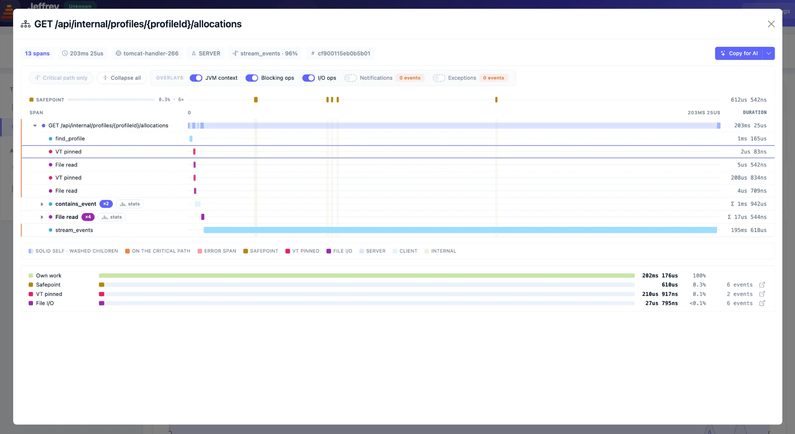
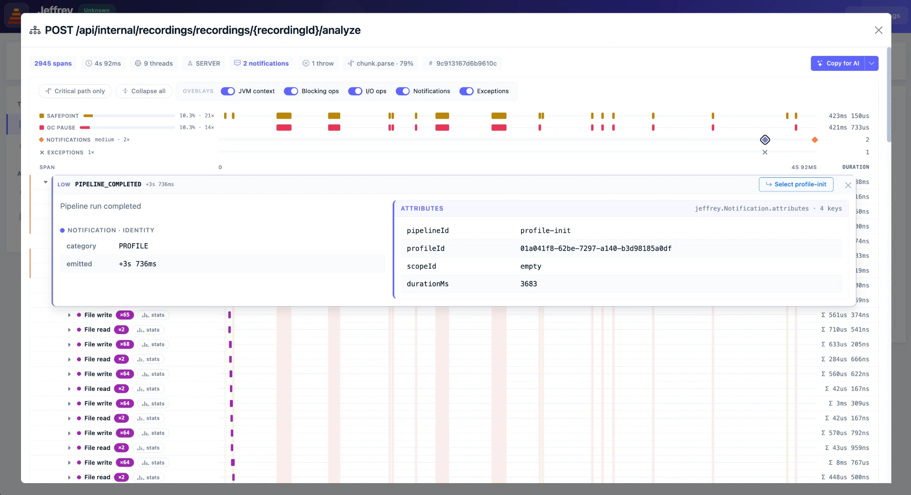

Spans are JFR events, written into the same recording as the profiler’s samples. There is no collector, no exporter, no “send data” step — the trace and the profile land in one file, and any event type declaring a spanId field participates with zero configuration.
The waterfall shows self-versus-child time on every bar, dims everything off the critical path, folds repeated siblings into a run with count, total, median, P95 and a mini-histogram — and overlays GC pauses, safepoints, blocking spans, exceptions and notifications on top.
A tracing tool normally says a span took 400 ms and stops there. Jeffrey answers doing what: the Why slow panel ranks GC, safepoints, I/O and locks for the span, and every span opens a flamegraph — Inclusive or Self — correlated purely by thread and time window.
Spans carry attributes — and they are queryable across the whole profile: Search Traces ANDs conditions and compares the matches’ latency against everything else, Attribute Values ranks every value of a key by total time rather than call count, and Latency by Attributes draws each value over log-spaced duration buckets, so bimodality that percentiles hide is simply visible.

The new jeffrey-tracing libraries meet your code where it is. The core Tracer API has zero dependencies; around it sit modules for Servlet, Spring, JDBC, HikariCP, MyBatis and gRPC — and a Spring Boot starter that auto-configures the lot: add the dependency and write nothing.
Prefer annotations? Mark a method @Traced and the Jeffrey Agent weaves the span at class load — the method is left exactly as it was written. It nests under whatever span is in progress, records as its own root when there is none, and marks the span failed on throw. Argument capture is opt-in and restricted to an allow-list of stable value types.
Context lives on the thread in a ScopedValue, bounded by a lambda so it cannot leak; crossing threads is explicit with fork and continueIn.
The JDK already emits the events that matter — FileRead, FileWrite and FileForce, SocketRead and SocketWrite, monitor waits and Object.wait, thread parks and sleeps, ZGC allocation stalls, even virtual-thread pinning. Eleven event types in all — they carry a thread and a time window, which is all a trace needs: they land inside the right span with zero instrumentation, and your libraries’ I/O shows up without anyone tracing it.
Blocking leaves are promoted in the waterfall, so “this span was slow because it sat in a SocketWrite” is something you see, not something you deduce. The provisioner’s lowered thresholds make them visible at trace resolution — the stock JFR configuration only keeps lock waits above 20 ms and socket I/O above 1 ms, coarser than a trace is read at.
And the JVM’s own pauses are part of the story: GC pauses and safepoints overlay the trace, so a collection stealing time from the middle of a span is drawn on the span itself — and Why slow puts a number on exactly how much it took. Two traces of the same operation make the case: one where a single 101 ms pause owns 70% of the request, and one that runs untouched in 48 ms.
A trace shows what the runtime did; jeffrey.Notification lets the application add its own side of the story. A notification is a moment, not an interval — a threshold crossed, a pipeline completed, a circuit breaker opened — written into the recording and stamped with the enclosing span’s ids, so it lands in the right place in the waterfall. Kind and message stay low-cardinality and dictionary-pooled; per-occurrence detail travels in searchable attributes.
Notifications get their own overlay lane: a diamond on the timeline opens the docked detail — identity, severity, when it was emitted, and every attribute — one click from the span that owns it.
Exceptions need no instrumentation at all: every throw in the recording is attributed to the span that was running. The stack opens in the same docked panel, with library frames folded so your own code stands out — and a copy button when you want the whole thing.

The per-instance timeline card folds its meta strip into the card header — the same information, one visual unit per instance.
The same SQL text used to be stored per-row four times over — a 92 MB recording could produce a multi-gigabyte profile database. Repeated texts are now dictionary-pooled and events became a view, so every existing reader is unaffected while the database shrinks by orders of magnitude.
The waterfall and the operation drill-down export what you are looking at as a single Markdown document built for pasting into an AI assistant — opening with a how-to-read preamble so span semantics aren’t guessed wrong.
A failed flamegraph request now surfaces the error instead of spinning forever — and the weight extractor skips events that carry no class instead of producing a broken entity.
The stock JFR configuration keeps lock waits above 20 ms and socket I/O above 1 ms — coarser than a trace is read at. The provisioner now starts a second recording carrying only the lowered thresholds; JFR applies the most verbose setting, so the dumped files and the live stream both pick them up. TRACING=off opts out.
The provisioner merges the environment as a proper configuration layer instead of per-field fallbacks — and a settings-file ordering bug that could fail provisioning outright on real installs is fixed.
Statements are named by their mapper method — far more readable than raw SQL — and record the bound parameter values. The interceptor takes over from the generic DataSource wrapper so nothing is double-recorded.
Tracing is a first-class product on the docs site: 18 guide pages plus one page per Tracer API method, with the Jeffrey Events catalog and span trees drawn as real diagrams.
Five skills ship with the libraries so an AI assistant can instrument a codebase correctly — core, gRPC, HTTP client, MyBatis and Spring REST server.
Streamed statements now report how many rows they actually delivered, so a query that returns nothing is distinguishable from one that floods.